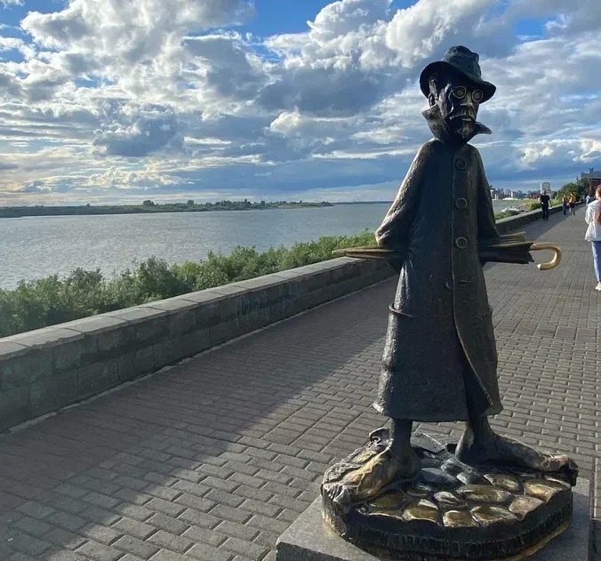

О городе
Томск — основанный в далеком 1604 году город, который находится на востоке Западной Сибири, на берегу реки Томь. Его основание стало результатом освоения Сибири Ермаком и его дружиной.

Достопримечательности
В XVIII веке Россия расширила свои владения, границы отодвинулись на юг и восток, и Томск перестал быть оборонительным пунктом. Благодаря своему расположению между западом и востоком город развивался как торговый, особенно когда построили Сибирский тракт из Москвы в Кяхту. В 1804 году Томск стал центром Томской губернии, а затем и культурно-экономическим центром Западной Сибири. Население быстро росло благодаря золотодобыче в этом регионе. В конце XIX века первые за Уралом университеты были открыты именно здесь, и Томск прозвали «сибирскими Афинами». Большую роль в развитии города сыграла Великая Отечественная война: сюда были эвакуированы ведущие советские предприятия, и местное производство увеличилось втрое. Сегодня Томск — крупный научно-промышленный город. В планах администрации — расширить его и модернизировать. Главные достопримечательности города сконцентрированы в центре, и поэтому их легко можно обойти за пару дней.
